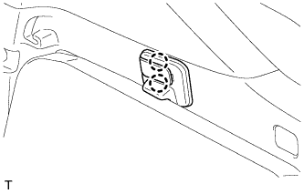
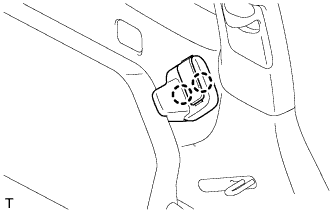
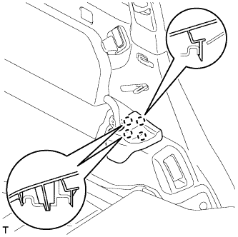

ЗАДНЕЕ СИДЕНЬЕ № 2 В СБОРЕ (для моделей с противоположно расположенными сиденьями) > УСТАНОВКА |
| 1. УСТАНОВИТЕ ЛЕВОЕ ЗАДНЕЕ СИДЕНЬЕ № 2 В СБОРЕ |
Сложите подушку сиденья.
Закрепите боковой ограничитель заднего сиденья и зафиксируйте подушку сиденья на месте.
Установите заднее сиденье № 2 в сборе в салон.
Временно установите гайку.
Отсоедините боковой ограничитель заднего сиденья и опустите подушку сиденья.
Временно затяните 3 болта.
Затяните 3 болта.
|  |
Введите в зацепление 2 захвата, чтобы закрыть крышку.
|  |
Введите в зацепление 2 захвата, чтобы закрыть крышку.
Сложите подушку сиденья.
Закрепите боковой ограничитель заднего сиденья и зафиксируйте подушку сиденья на месте.
Затяните гайку.
Отсоедините боковой ограничитель заднего сиденья и опустите подушку сиденья.
| 2. УСТАНОВИТЕ ЛЕВУЮ БОКОВУЮ НАКЛАДКУ ЗАДНЕГО СИДЕНЬЯ |
|  |
Введите в зацепление 4 захвата, чтобы установить крышку.